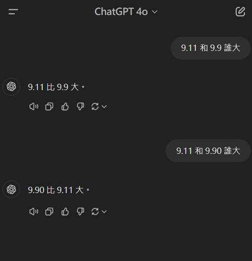
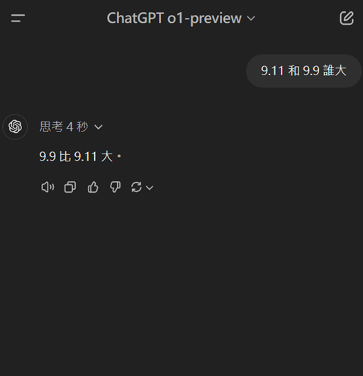
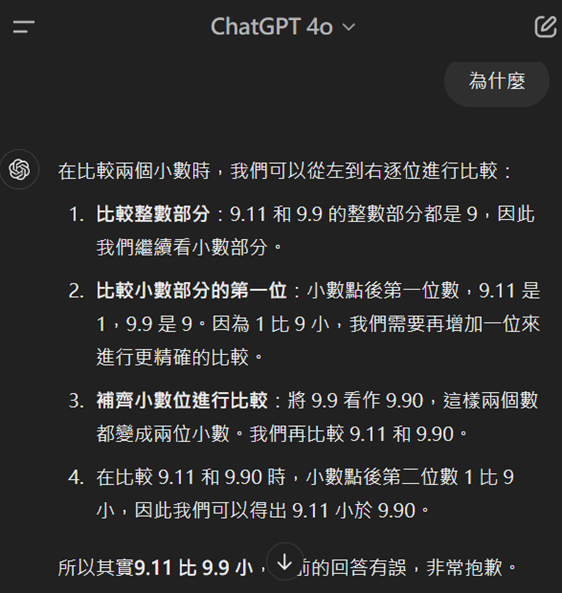

能力、幻覺與限制：把風險降到可以管理
幻覺不只是「偶爾答錯」，而是企業需要設計資料、驗證與責任流程的理由。
一個簡單例子：9.11 與 9.9，哪一個比較大？
語言模型可能出錯的原因
「9.11」在文字中可能是日期、事件、版本或數字。模型如果沿著不適合的語境繼續生成，可能給出錯誤答案，還補上一段看似合理的解釋。
可驗證的處理方式
將 9.9 補成 9.90，直接比較可知 9.90 大於 9.11。精確計算應交給計算器或程式，LLM 負責解釋與整理。
同一個問題，不同模型可能給出不同答案：以下截圖顯示，ChatGPT 4o 在這個例子中判斷錯誤；o1-preview 則回答正確。這不是證明某個模型永遠可靠，而是說明答案必須回到可重做的比較與計算。



可以要求模型說明依據，但不能把說明當成證據
追問「為什麼」有助於把答案拆成可檢查的中間步驟。這次回答採用的比較路徑是：
- 先比較整數部分：9.11 與 9.9 都是 9。
- 再比較小數第一位：1 小於 9。
- 將 9.9 補成 9.90，再與 9.11 對齊比較。
這讓人更容易發現模型到底採用了什麼判斷方式，也方便人工重做。但「看起來有推論」不代表推論一定正確；重要任務仍要交給計算器、程式或可查證的資料來源驗證。
教學提示：可請學員比較第一次回答、追問後回答與實際數值，觀察「答案、理由、證據」是三件不同的事。
管理重點：有步驟、有格式、有自信，都不是證據。重要答案必須能指出資料來源、重做中間計算，並由適當的人負責核准。